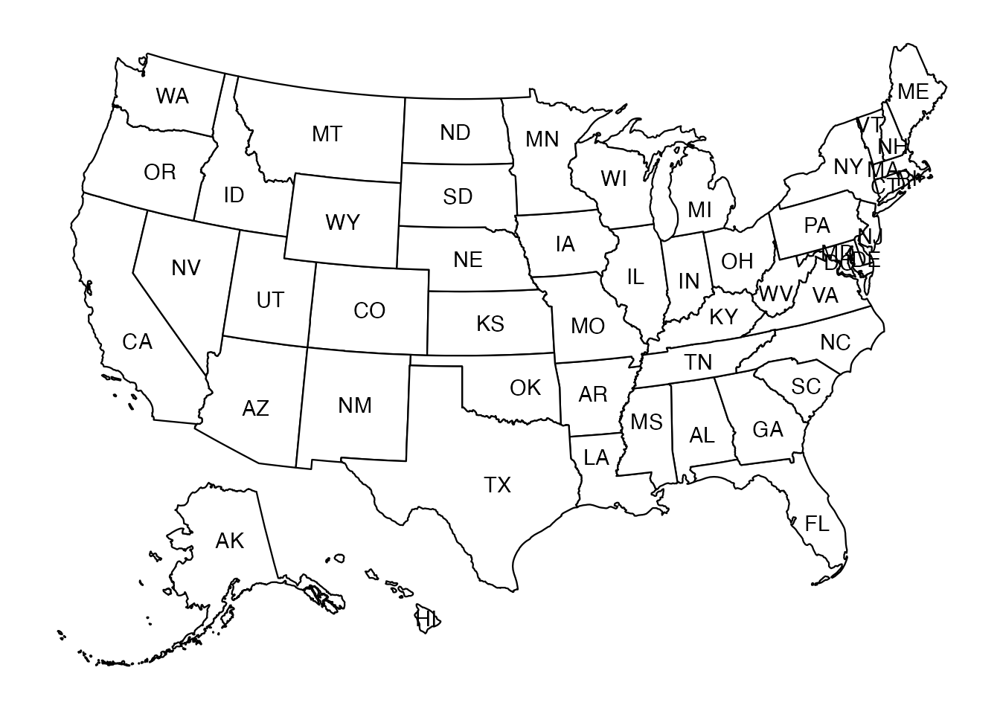
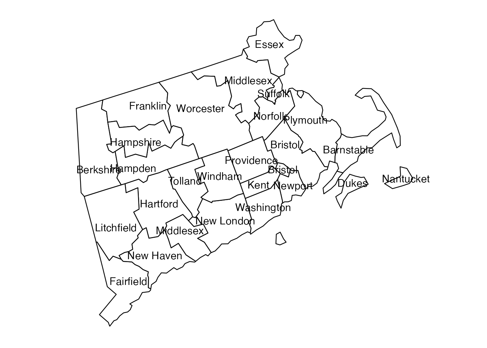
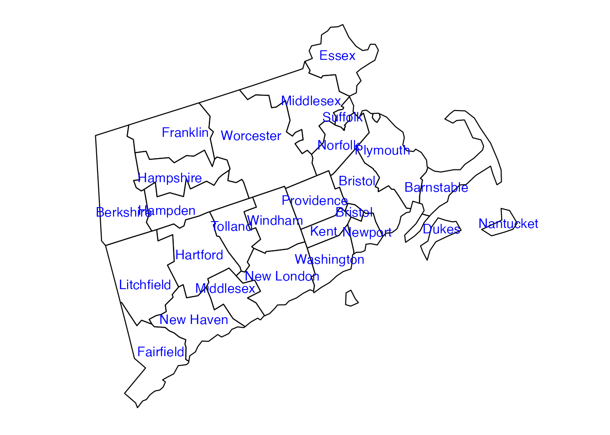
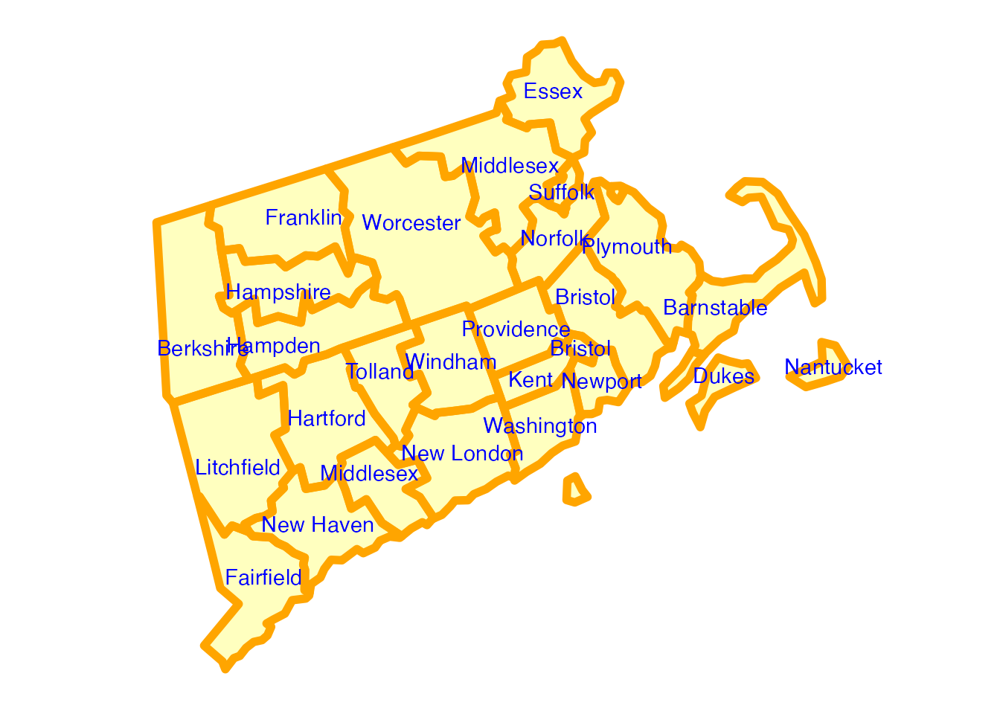

3. Advanced Mapping
Paolo Di Lorenzo
2023-12-06
Source:vignettes/advanced-mapping.Rmd
advanced-mapping.RmdThis vignette will explore some of the more advanced mapping features
of usmap. Before continuing, be sure to check out Mapping the US as that will cover more of the
basics of plotting US maps and styling them with
ggplot2.
Labels
As of usmap 0.4.0, maps with state labels can be
created:
usmap::plot_usmap("states", labels = TRUE)
usmap 0.5.0 adds the ability to add county labels:
usmap::plot_usmap("counties", include = c("MA", "CT", "RI"), labels = TRUE)
Labels can be colored using the label_color
parameter:
usmap::plot_usmap("counties",
include = c("MA", "CT", "RI"),
labels = TRUE, label_color = "blue")
ggplot2 aesthetic mapping parameters
Parameters used by the map’s aesthetic mapping
(ggplot2::aes) can be passed directly via
plot_usmap by adding the parameters anywhere at the call
site:
usmap::plot_usmap("counties",
include = c("MA", "CT", "RI"),
labels = TRUE, label_color = "blue",
fill = "yellow", alpha = 0.25, color = "orange", linewidth = 2)
Notice in this case we set the fill and
alpha parameters to fill in the counties with a
semi-transparent yellow color.
The following parameters are supported:
-
fill: fill color of the state/county polygons -
alpha: transparency of the state/county polygon fill colors -
color/colour: line color of the state/county polygons -
linewidth: thickness of the state/county polygon lines